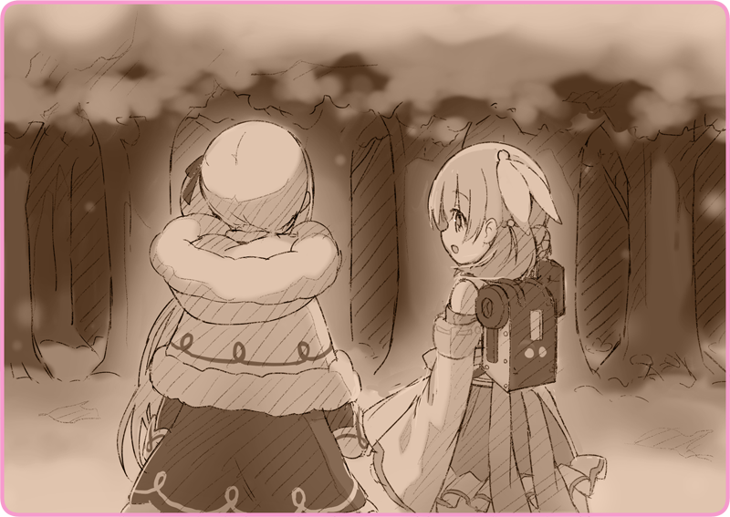

日が落ちると、芯から凍えるような寒さが襲ってきた。
雪はいっこうに止む気配がなく、目抜き通りに白い絨毯を敷き詰めている。せめて体を濡らすことは避けようと、鎧戸が落とされた商店の前でかがみ込んでいた。月も見えない夜。遠くで微かに灯るガス灯だけが寄る辺だった。
「灰桜……あなたは温かいわね」
ストールを２人でかぶって、身を寄せ合っている。灰桜の体はぽかぽかと発熱しており、冷え切った体を少しずつ溶かしてくれる。
「本当ね……くすっ……」
冗談抜きで、彼女がいなければ凍死していたかもしれない。
「ごめんね」
「また嘘をついたの……あの人形はね、こっそり売るつもりだったの」
「お金持ちにとって、人形はステイタスなの。でもいまは民間の人形なんてほとんど出回っていないから……だから、高値で売れるのよ。こっそり持ち出した……ううん、盗み出したの」
「そんなの分かってる……でもどうしようもなかったの」
どうしようもなく悲しくて、涙がにじむのが分かった。
「私にはローベリアの血が入っている……母さんの血よ。劇団には……ううん、この国に居場所なんてないの。毎日、毎日……ひどい扱いをされて……それでも収容所に送られないだけマシだけど……」
「だからお金を作って……お母さんとお父さんの元へ行きたかったの。わたしの居場所に……でも、もうそれは無理だわ……」
「ダメなのよ。あいつらとの約束を破った……お金なんてまともに払ってくれないわ。ううん、きっといまも私を探している……見つかったらどんな目に合うか……」
「ごめんね灰桜、こんなことに巻き込んで。早くマスターと合流して。所有者が側にいれば下手なことはできないから……だから」
「私は……」
灰桜の疑問に、リリアは答えることが出来なかった。
ただしんしんと、雪の降り続ける空だけを見つめた。
「……国境でも、越えようかしら」
「そうよね、ずっとずっと歩いていって……国境線さえ超えればそこはローベリアよ」
乾いた笑いが漏れる。
自分がどれだけ無謀なことを言っているかは分かっている。それでも空想の一つもしなければ心が持たなかった。
「皇軍の目をかいくぐって、うまく森を抜けて、ふふふっ……」
気がつけば、隣りにいた温もりがなくなっていた。
灰桜が立ち上がって、真剣な表情で見つめている。
「……怒らないで」
馬鹿なことを言っているのは分かっている。
それが、自殺行為以外のなにものでもないということも……
「じゃあ……なに？」
「……は？」
灰桜はいたって真面目だった。
ぎゅっとリリアの手を取ると、懸命に引っ張って体を起こしてくれる。
「灰桜、あなたまさか……」
手をつないだまま、灰桜はにっこりと微笑んだ。
＊ ＊ ＊

雪帽子をかぶった針葉樹林が密集しており、その奥には完全な暗闇が広がっている。足元には申し訳程度の有刺鉄線が敷かれており、片隅には簡素な警告看板。実際のところ、この程度の注意喚起で十分だった。アルタリアに住むもので、この森を抜けるという意味を知らないものはいない。
皇軍の前線はこのずっと先だ。その間に守備基地、地雷原、汚染地帯とあらゆる障害が待ち受けている。うかつな侵入者は敵スパイとみなされるに違いない。ましてやリリアにはローベリアの血が入っている。
「灰桜……本当にいいの？」
震える声で、隣りにいる人形に尋ねた。手袋越しに、小さな指先の感触が伝わってくる。
なにも不安を覚えていない様子で、にっこりと灰桜は笑った。
なんだかその表情を見つめていると、不思議と安堵の気持ちがこみ上げてくる。彼女が隣にいてくれることが、心から嬉しかった。
「……ありがとう」
ぎゅっとその手を握りしめて。
「行きましょ、灰桜」
やがて、雪を踏みしめて有刺鉄線を超えていた。

 「わたしは、役に立つ自律人形ですのでっ」
「わたしは、役に立つ自律人形ですのでっ」